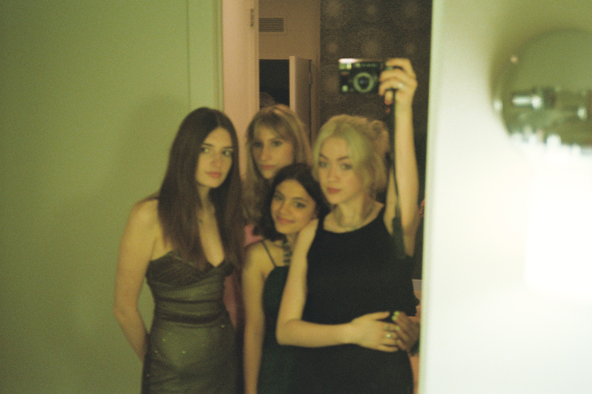
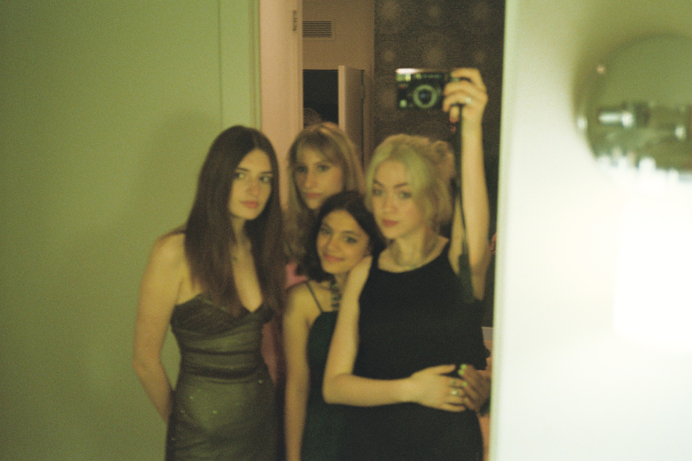

How to Take Pictures
with me (Nina)
A couple weekends ago, I went to Connecticut with a handful of friends. We spent a couple days there, not doing much else other than walking around and making dinner.
We spent hours walking along a beach, many of us with cameras in hand. I brought a TLR I bought at the Chelsea Flea over the summer for $20. I'd only used it once before,
so I was still gettting comfortable with operating it. So I was really excited when, about a week later, I got the photos developed and they all turned out beautifully.
It felt like a really successful moment, to be able to look at all the photos I took and be happy with them all. They all are exposed correctly, compositionally pretty sound, and
evoke the feeling I want to have present in all of my photos.
These photos prompted me to think about how my photography has progressed over the last couple years.
I realized that photography is something that I've almost completely taught myself how to do. I had been interested in film photography for a bit, but started to actually try it out during my senior
year of high school, when I started to date someone who took a lot of photos.
I mentioned my interest in this to my dad, and after a quick dig through the closet in our basement, I suddenly had a camera in my hands.
 
